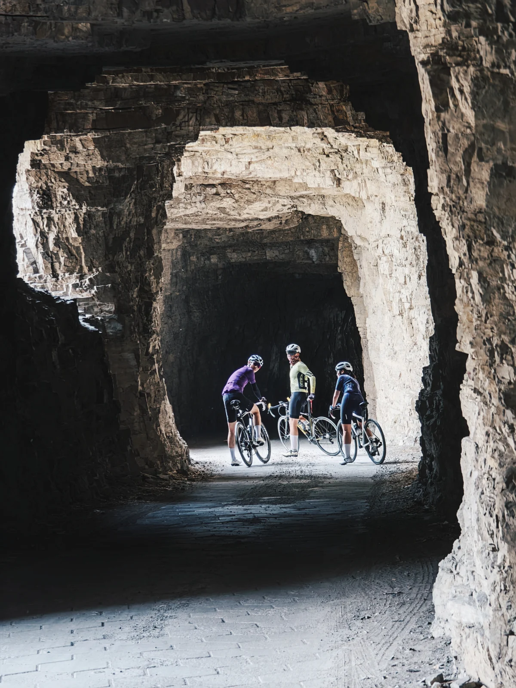

官厅水库风车骑行 + 野鸭湖 / 京郊小洱海
五月主题 · 最开阔也最吃天气的一条，风对了会非常爽，风不对就会很硬。
北京·延庆
官厅水库风车骑行
11.0h
190km
35km / 200m / 3.0h
L4 可执行
五道口出发


行程卡
| 字段 | 内容 |
|---|---|
| 区域 | 北京·延庆 |
| 主题 | 官厅水库风车骑行 |
| 总时长 | 11.0h |
| 预估自驾 | 190km |
| 骑行参数 | 35km / 200m / 3.0h |
| 强度 | 中等 |
| 适合 | 想要开阔地貌 / 风车感 / 更偏公路巡航的人 |
| 一句话结论 | 官厅水库赢在开阔和野，不是精致型，但天气好的五月会有很强的“出北京了”的感觉。 |
路线摘要
官厅水库赢在开阔和野，不是精致型，但天气好的五月会有很强的“出北京了”的感觉。
🏞️ 目的地介绍
🌬️ 官厅水库这条线最特别的是“空”。视野大、天高、风车和库滨带一起出现，很容易有一种北方版海边巡航的错觉。它不像雁栖湖那样精致，也不像密云那样经典成熟，但如果你喜欢开阔地貌和更野一点的公路感，它会很上头。
✨ 活动介绍
🛞 适合把官厅理解成“天气型路线”。五月如果是晴天微风，它很舒服；如果是 4–6 级西北风或者有沙尘，体感会立刻下降。所以这条线出发前必须看风。路线里可以把康庄、野鸭湖、库滨骑游道串成一整天，骑完可按状态去在不cafe恢复，或去十六点半/鸭丫私厨吃一顿正餐。
🍽️ 锚点补给
- 在不cafe · ★ 4.7 · 546条 · ￥48 · 康庄环境榜第1
- 十六点半餐厅 · ★ 4.4 · 1435条 · ￥102 · 延庆特色菜打卡人气榜第1
- 鸭丫私厨 · ★ 4.2 · 402条 · ￥78 · 野鸭湖东门就近正餐
推荐行程安排
| 序号 | 活动 | 时长 | 备注 |
|---|---|---|---|
| 1 | 五道口出发，自驾去康庄 / 官厅片区 🚗 | 2.0h | 距离更远，早出发更稳 |
| 2 | 整车 / 看风况 / 热身 | 0.4h | 建议自带车，租车不稳定 |
| 3 | 官厅水库骑游道 + 周边公路骑行 35km / 200m 🌊 | 3.0h | 西卓家营—下营一线是较稳的主段 |
| 4 | 野鸭湖观景 / 拉伸 / 拍照 📷 | 0.8h | 适合放慢节奏看水鸟和风车 |
| 5 | 在不cafe / 十六点半 / 鸭丫私厨补给 🍽️ | 1.1h | 在不cafe / 十六点半餐厅 / 鸭丫私厨 |
| 6 | 返程回五道口 | 2.0h | 如果风大，返程前别硬撑，先补水休息 |
默认都按五月周末的一日线来排：早出发、主骑行放上午和中午前后、下午留给吃饭和松弛收尾。
为什么这个方案值得保留
- 地貌气质最特别，风车和大库面很有辨识度。
- 适合喜欢开阔公路巡航的人，不用一直应对大爬坡。
- 能和野鸭湖一起组成更完整的一日线。
风险与临门一脚
- 五月常见大风和沙尘，天气不合适就不建议硬去。
- 整体距离最远，通勤成本高。
- 租车资源稀少，默认按自带车准备。
证据入口
本页已用真实大众点评登录态补齐核心补给锚点；临出发前仍建议点开商户页复核营业、排队和团购有效性。
🍽️ 点评信息卡（商户锚点）
真实大众点评登录态补证：原先“野鸭湖餐厅/健龙/大隐于野”未稳定命中，改为康庄/野鸭湖片区实际可核验的咖啡与正餐锚点。
在不cafe
康庄商圈咖啡
口味4.7 / 环境4.8 / 服务4.7
点评榜单康庄商圈美食环境榜 · 第1名
›休息中 次日10:00开始营业›
有大桌免费停车可带宠物有儿童游乐区
康庄镇马营村（距马营公交站180m）
点评原页复核营业
- 为什么放这里
- 官厅/野鸭湖大风日之后需要一个暖和、能坐下的恢复点，在不cafe是本片区最强咖啡锚点。
- 招牌 / 推荐
- 草莓生酪雪顶、生酪拿铁、蜂蜜鸡腿、黑椒牛肉意面、热美式、纽约芝士蛋糕、栗子蛋糕。
- 团购 / 菜单
- 点评页未显示明显团购；菜单约18项。
- 好评信号
- 环境安静舒适、小院露台、有狗狗/猫/兔子、靠近野鸭湖、适合拍照恢复。
- 风险信号
- 网红环境强于咖啡专业度；个别差评提到出品不稳定、宠物和排队体验因人而异。
十六点半餐厅
康庄商圈特色菜
口味4.4 / 环境4.7 / 服务4.5
点评榜单延庆区特色菜打卡人气榜 · 第1名
›营业中 11:30-14:30, 17:00-20:30›
有包厢有大桌免费停车有宝宝椅
康庄镇马营村3区2号33号
点评原页复核营业
- 为什么放这里
- 如果骑完需要正餐而不是咖啡，这家兼顾环境和菜品，离野鸭湖/康庄动线顺。
- 招牌 / 推荐
- 香炸小河虾、私房干烧海鲈鱼、巧拌脆爽笋丝、沾汁永宁豆腐、羊肚菌竹笙汤、麻辣沸腾鱼。
- 团购 / 菜单
- 100元代金券 ¥90；双人食套餐（鱼）¥288；双人尝鲜特惠 ¥268。
- 好评信号
- 装修有艺术感、离野鸭湖近、食材新鲜、适合家庭正餐。
- 风险信号
- 五一等位/上菜慢的差评较明显；热门时段要预留等待，不适合赶时间。
鸭丫私厨
康庄商圈私房菜
口味4.3 / 环境4.5 / 服务4.3
点评榜单延庆区私房菜热门榜 · 第2名
›营业中 11:00-14:30, 16:30-21:00›
有包厢免费停车有宝宝椅可带宠物
野鸭湖湿地公园东门东行100米
点评原页复核营业
- 为什么放这里
- 更贴近野鸭湖入口，适合作为“看完湖就吃”的就近备选。
- 招牌 / 推荐
- 砂锅扁豆丝、江南咸肉豆腐煮时蔬、青花椒麻鱼、螺丝椒炒肉、红烧肉、韭菜盒子。
- 团购 / 菜单
- 100元代金券 ¥95；双人小炒肉套餐 ¥198；3-4人椒麻鱼套餐 ¥288。
- 好评信号
- 位置在景区门口、菜品口味在线、价格公道、现炒现做，带孩子可做清淡。
- 风险信号
- 节假日人多时拼桌/抢位感强；停车和团队接待可能影响散客体验。